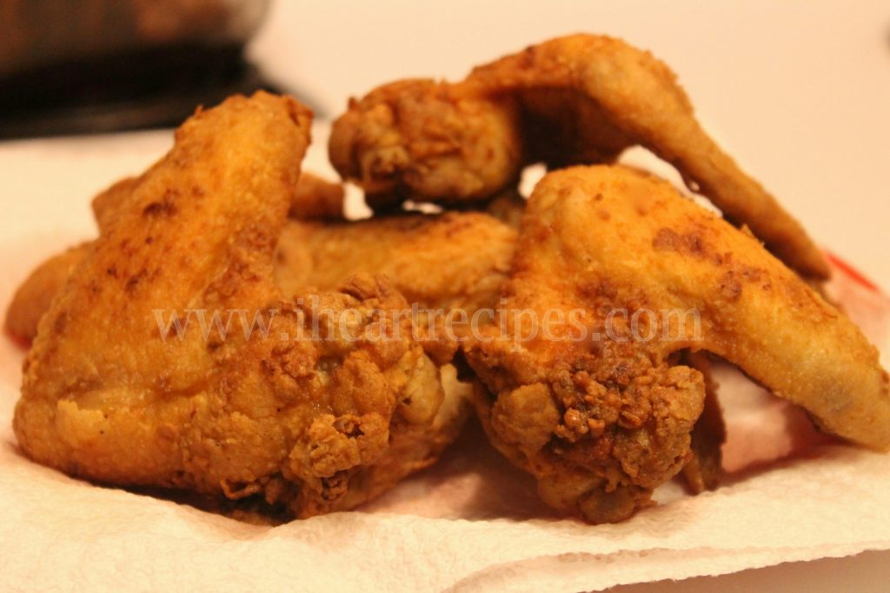

Fried Chicken Wings

Description
This fried chicken will also be covered in tasty Buffalo sauce, preferably Frank's Red Hot.
Ingredients
- 12 small chicken wings
- 1/4 teaspoon seasoned salt, or to taste
- 1 cup all purpose flour
- 1 teaspoon coarse salt
- 1/2 teaspoon ground black pepper
- 1/4 teaspoon cayenne pepper
- 1/4 teaspoon paprika
- 1 (12 fluid ounce) bottle Buffalo wing sauce (Frank's), or to taste
- 2 quarts vegetable oil for frying
Steps
- Season chicken wings lightly with seasoned salt
- Mix flour, salt, black pepper, cayenne pepper, and paprika together in a wide, shallow bowl. Press wings into flour mixture to coat and arrange onto a large plate so they do not touch. Refrigerate coated wings for 15 to 30 minutes
- Dredge wings again in flour mixture and return to the plate. Refrigerate wings again 15 to 30 minutes
- Heat oil in a deep-fryer or large saucepan to 375 degrees F (190 degrees C)
- Fry chicken wings in hot oil until crisp and no longer pink at the bone and the juices run clear, 9 to 12 minutes. An instant-read thermometer inserted into the thickest part of the meat, near the bone should read 165 degrees F (74 degrees C)
- Transfer fried wings to a large stainless steel bowl. Drizzle sauce over the wings and toss to coat